Drone Photo-Transmission System
The main purpose of this system is to behave as a wireless hotspot and SSH into the photo-transmission system in the camera trap and retrieve the photos using RSYNC.
Setting Up Passwordless Wifi Hotspot
This section of the guide follows mostly through this tutorial by adafruit.
First of all, install the software onto the Pi that will act as the 'hostap' (host access point)
To do so you need internet access so make sure you either have ethernet of wifi connected.
sudo apt-get update
sudo apt-get install hostapd isc-dhcp-server
(You may need to sudo apt-get update if the Pi can't seem to get to the apt-get repositories)
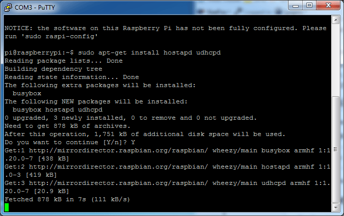
(text above shows udhcpd but that doesnt work as well as isc-dhcp-server, still, the output should look similar)
Configure Access Point
Now we can configure the access point details. We will set up a password-protected network so only people with the password can connect.
Create a new file by running
sudo nano /etc/hostapd/hostapd.conf
Paste the following in, you can change the text after ssid= to another name, that will be the network broadcast name. The password can be changed with the text after wpa_passphrase=. Make sure to type L in rtl871xdrv rather than a 1.
interface=wlan0
driver=rtl871xdrv
ssid=WadiDrone
hw_mode=g
channel=6
macaddr_acl=0
auth_algs=1
ignore_broadcast_ssid=0
If you are not using the Adafruit wifi adapters, you may have to change the driver=rtl871xdrv to say driver=nl80211 or something, we don't have tutorial support for that tho, YMMV!
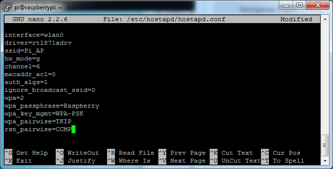 Save as usual. Make sure each line has no extra spaces or tabs at the end or beginning - this file is pretty picky!
Now we will tell the Pi where to find this configuration file. Run sudo nano /etc/default/hostapd
Find the line #DAEMON_CONF="" and edit it so it says DAEMON_CONF="/etc/hostapd/hostapd.conf" Don't forget to remove the # in front to activate it!
Then save the file
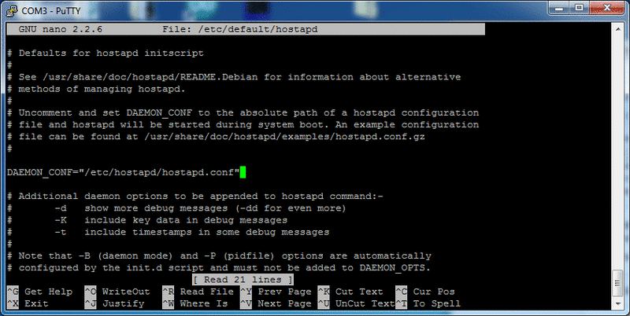
Update hostapd
Before we can run the access point software, we have to update it to a version that supports the WiFi adapter. First get the new version by typing in
wget http://adafruit-download.s3.amazonaws.com/adafruit_hostapd_14128.zip
then
unzip adafruit_hostapd_14128.zip
to uncompress it. Move the old version out of the way with
sudo mv /usr/sbin/hostapd /usr/sbin/hostapd.ORIG
And move the new version back with
sudo mv hostapd /usr/sbin
set it up so its valid to run with
sudo chmod 755 /usr/sbin/hostapd
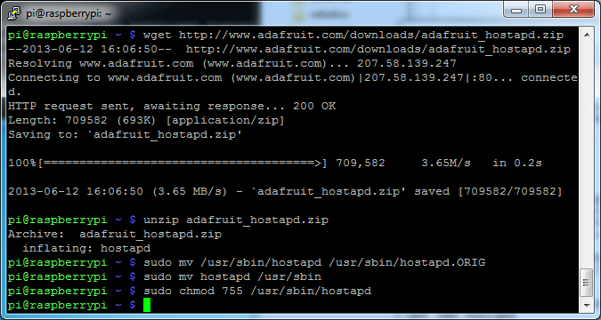
Setup DHCP Server
Next we will edit /etc/dhcp/dhcpd.conf, a file that sets up our DHCP server - this allows wifi connections to automatically get IP addresses, DNS, etc.
Run this command to edit the file
sudo nano /etc/dhcp/dhcpd.conf
Find the lines that say
option domain-name "example.org";
option domain-name-servers ns1.example.org, ns2.example.org;
and change them to add a # in the beginning so they say
#option domain-name "example.org";
#option domain-name-servers ns1.example.org, ns2.example.org;
Find the lines that say
# If this DHCP server is the official DHCP server for the local
# network, the authoritative directive should be uncommented.
#authoritative;
and remove the # so it says
# If this DHCP server is the official DHCP server for the local
# network, the authoritative directive should be uncommented.
authoritative;
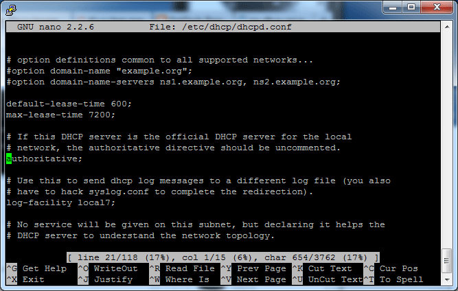
Then scroll down to the bottom and add the following lines.
subnet 192.168.10.0 netmask 255.255.255.0 {
range 192.168.10.10 192.168.10.20;
option broadcast-address 192.168.10.255;
option routers 192.168.10.1;
default-lease-time 600;
max-lease-time 7200;
option domain-name "local";
option domain-name-servers 8.8.8.8, 8.8.4.4;
}
Note, that the screenshot below only illustrates the code, but you should type the code above.
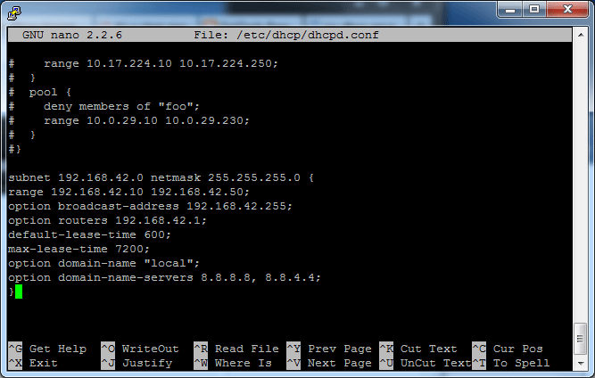
Save the file by typing in Control-X then Y then return
Run
sudo nano /etc/default/isc-dhcp-server
and scroll down to INTERFACES="" and update it to say INTERFACES="wlan0"
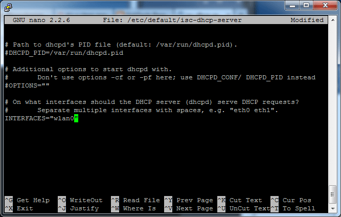
close and save the file
Setup Wlan0 For Static IP
If you happen to have wlan0 active because you set it up, run sudo ifdown wlan0
There's no harm in running it if you're not sure
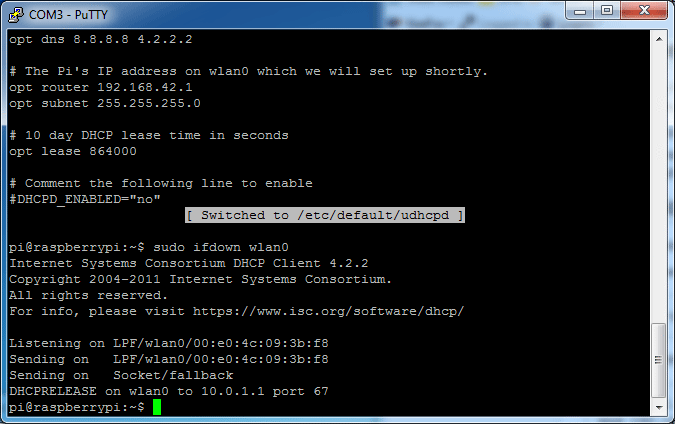
Next we will set up the wlan0 connection to be static and incoming.
run sudo nano /etc/network/interfaces to edit the file
Find the line auto wlan0 and add a # in front of the line,
and in front of every line afterwards. If you don't have that line,
just make sure it looks like the screenshot below in the end!
Basically just remove any old wlan0 configuration settings, we'll
be changing them up
Depending on your existing setup/distribution there might be more or less text and it may vary a little bit Add the lines
iface wlan0 inet static
address 192.168.10.1
netmask 255.255.255.0
After allow hotplug wlan0 - see below for an example of what it should
look like. (ignore our hyphen in allow-hotplug tho, its a typo!) Any other
lines afterwards should have a # in front to disable them.
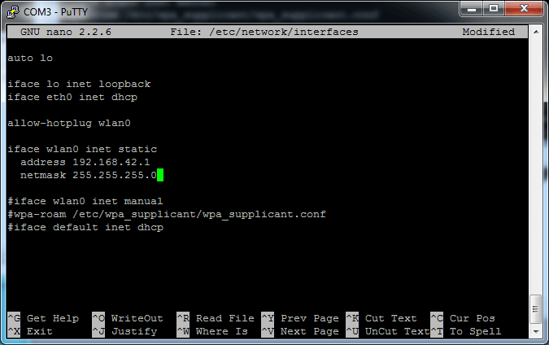
Save the file (Control-X Y return) Assign a static IP address to the wifi adapter by running
sudo ifconfig wlan0 192.168.10.1
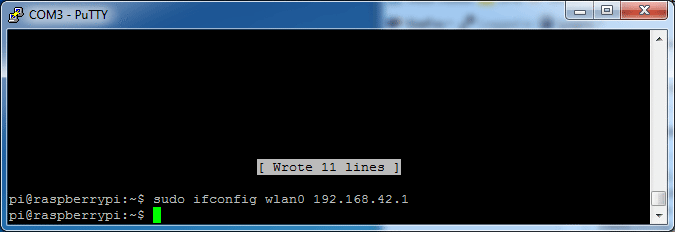
First test! Finally we can test the access point host! Run
sudo /usr/sbin/hostapd /etc/hostapd/hostapd.conf
To manually run hostapd with our configuration file. You should see it set up and use wlan0 then you can check with another wifi computer that you see your SSID show up. If so, you have successfully set up the access point.
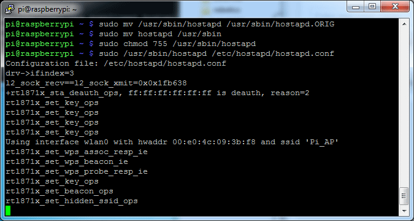
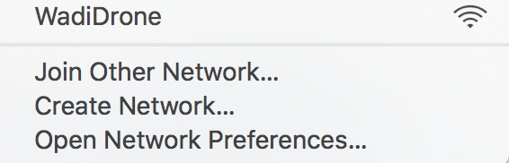
You can try connecting and disconnecting from the WadiDrone with the password you set before, debug text will display on the Pi console but you won't be able to connect through to the Ethernet connection yet. Cancel the test by typing Control-C in the Pi console to get back to the Pi command line.
Finishing up!
OK now that we know it works, time to set it up as a 'daemon' - a program that will start when the Pi boots. Run the following commands
sudo service hostapd start
sudo service isc-dhcp-server start
you can always check the status of the host AP server and the DHCP server with
sudo service hostapd status
sudo service isc-dhcp-server status
To start the daemon services. Verify that they both start successfully (no 'failure' or 'errors')
Then to make it so it runs every time on boot
sudo update-rc.d hostapd enable
sudo update-rc.d isc-dhcp-server enable
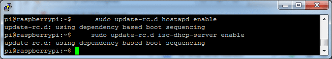
Leasing static IP address to camera-trap photo transmission system
In this part of the tutorial, you will have to work with both the camera trap and the drone system. For each camera trap that you want to serve with the drone, you will have to alter the config file.
In the camera trap:
In the raspberry at the camera trap modify the
/etc/network/interfaces
so it looks like the following
auto lo
iface lo inet loopback
iface eth0 inet dhcp
auto wlan0
allow-hotplug wlan0
iface wlan0 inet dhcp
wpa-conf /etc/wpa_supplicant/wpa_supplicant.conf
iface default inet dhcp
comment out the rest of the code
Make
/etc/wpa_supplicant/wpa_supplicant.conf
look like the following
ctrl_interface=DIR=/var/run/wpa_supplicant GROUP=netdev
update_config=1
network={
ssid="WadiDrone"
key_mgmt=NONE
auth_alg=OPEN
id_str="WadiDrone"
}
In the drone:
For each camera that you want to add to the system, you will have to add a static address to the record of the drone. Here we revisit the dhcpd.conf file from the previous part of the tutorial. This tutorial assumed you already setup the Wi-Fi hotspot using previous tutorial. Type the following command in the terminal:
sudo nano /etc/dhcp/dhcpd.conf
Add the following lines at the end of the file. The MAC address is individual to each Raspberry Pi and it can be found by typing ifconfig into the Terminal of the camera trap Raspberry Pi. The IP address also has to be unique, but you can assign it arbitrarily as long as it does not conflict with any of the other IP addresses. For setting the IP address, you must change the number after the last dot.
host camera1 { #add the name of the camera
hardware ethernet 80:1f:02:ef:e6:f2; #add the MAC address of the raspberry pi of camera
fixed-address 192.168.10.21; #the static ip you want to assign to the trap
}
Important: If the static leasing of the IP address does not work, restart the drone first and then restart the camera trap.
Establishing SSH connection with Camera Trap without Password
Because photos are transmitted using RSync, which uses SSH secure connection for transmission, you need to add drones's public key into the camera trap transmission system. Our tutorial draws liberally on material from this tutorial.
It is possible to configure your Pi to allow your computer to access it without providing a password each time you try to connect. To do this you need to generate an SSH key.
Potential problem (you may skip)
Depending on how your computer is configured and whether you tried to SSH into the Raspberry Pi before, your will see the following message
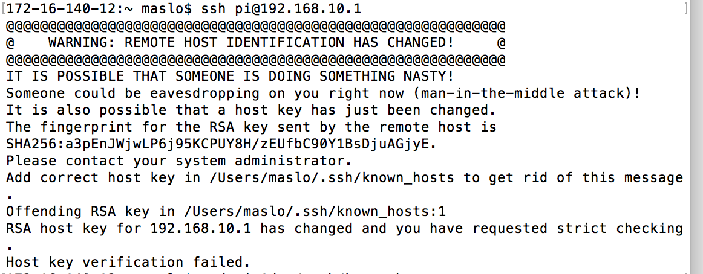
In order to remove the message you will need to call the following code in your terminal to remove the offending SSH key from your records. The IP address refers to the address of the drone hotspot.
ssh-keygen -R 192.168.10.1
Check for the existing keys
First, check whether there are already keys on the drone Raspberry Pi:
ls ~/.ssh
If you see files named id_rsa.pub or id_dsa.pub you have keys set up
already, so you can skip the generating keys step (or delete these files
with rm id* and make new keys).
Generate new SSH key for the drone
To generate new SSH keys enter the following command (Choose a sensible
hostname such as
ssh-keygen -t rsa -C drone@pi
Upon entering this command, you'll be asked where to save the key.
We suggest you save it in the default location (/home/pi/.ssh/id_rsa)
by just hitting Enter.
You'll also be asked to enter a passphrase. This is extra security which will make the key unusable without your passphrase, so if someone else copied your key, they could not impersonate you to gain access. If you choose to use a passphrase, type it here and press Enter, then type it again when prompted. Le ave empty for no passphrase.
Now you should see the files id_rsa and id_rsa.pub in your .sshdirectory
in your home folder:
ls ~/.ssh
authorized_keys id_rsa id_rsa.pub known_hosts
The id_rsa file is your private key. Keep this on your computer.
The id_rsa.pub file is your public key. This is what you put on
machines you want to connect to. When the machine you try to connect to
matches up your public and private key, it will allow you to connect.
Take a look at your public key to see what it looks like:
cat ~/.ssh/id_rsa.pub
It should be in the form:
ssh-rsa
Copy your public key into camera trap
To copy your public key to CAMERA TRAP, use the following command to append the public key to your authorized_keys file on the CAMERA TRAP, sending it over SSH:
cat ~/.ssh/id_rsa.pub | ssh <USERNAME>@<IP-ADDRESS> 'cat >> .ssh/authorized_keys'
Note that this time you will have to authenticate with your password.
Now try ssh
ssh-add
If this did not work, delete your keys with rm ~/.ssh/id* and follow the
instructions again.
You can also send files over SSH using the scp command (secure copy). See the SCP guide for more information.
Making Raspberry Pi execute a script on startup
A crucial part of the system is a Python script that runs on the startup and executes in a loop. When a camera trap transmission station becomes in range, the Python script downloads photos from the camera trap. In order to run the script, you must follow these steps:
Based on this tutorial
Auto Login
How to automatically login to Raspberry Pi console as pi user.
Step 1: Open a terminal session and edit inittab file.
sudo nano /etc/inittab
Step 2: Disable the getty program.
Navigate to the following line in inittab
1:2345:respawn:/sbin/getty 38400 tty1
And add a # at the beginning of the line to comment it out
#1:2345:respawn:/sbin/getty 38400 tty1
Step 3: Add login program to inittab.
Add the following line just below the commented line
1:2345:respawn:/bin/login -f pi tty1 </dev/tty1 >/dev/tty1 2>&1
This will run the login program with pi user and without any authentication
Step 4: Save and Exit.
Press Ctrl+X to exit nano editor followed by Y to save the file and then press Enter to confirm the filename.
Reboot the pi and it will boot straight on to the shell prompt
pi@raspberrypi without prompting you to enter username or password.
But this isn't enough; you need your Pi to automatically run some
command or a script. which is explained in the next section.
Run a Python Script after login
It is desirable to run the Python script automatically after login, so that drone starts looking for camera traps any time the system is on. The name of the file that runs in the Raspberrry Pi is currently "DroneControlClassesCompetition.py." Download this file onto the desktop of the drone Raspberry Pi, where you will be able to edit it in the future.
Step 1: Open a terminal session and edit the file /etc/profile
sudo nano /etc/profile
Step 2: Add the following line to the end of the file
python /home/pi/Desktop/DroneControlClassesCompetition.py &
replace the script name and path with correct name and path of your start-up script.
Step 3: Save and Exit
Press Ctrl+X to exit nano editor followed by Y to save the file.